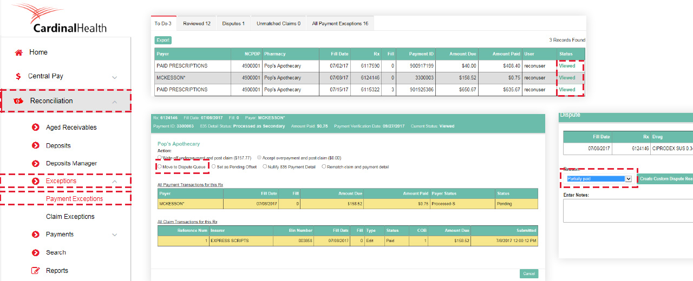
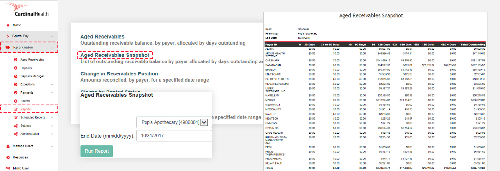
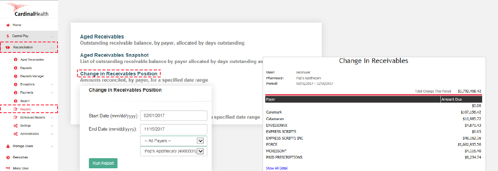
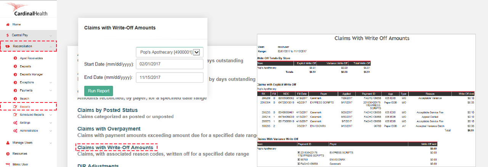
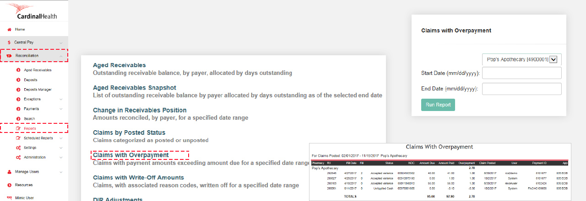
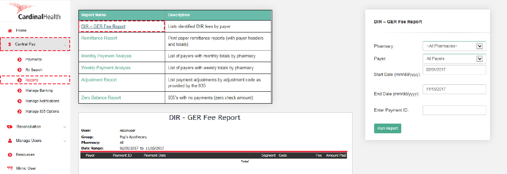

This is your guide to using Reconciliation and Central Pay for managing third party reimbursements. Learn how to achieve financial health for your pharmacy.
Valid OrderExpress IDs are required to access the Central Pay and Reconciliation portal.
OrderExpress IDs are unique, just like you. If someone in your pharmacy needs an OrderExpress ID, please contact your sales rep.
Check your Central Pay deposits
Open Central Pay from the left menu, then select Payments
Enter in a date range you wish to review
Start your search
To see details, select the Check number (middle of screen)
Why is verifying deposits important?
Verifying deposits keeps yours aged receivables up to date. This will ensure your end-of-month reports are as accurate as possible.
Verify your Direct Payer deposits
Open Reconciliation, then select Deposits
Select the check box
Select Verify Deposit
Select the date the funds were deposited
Tip: you can add comments to deposits by clicking on the pencil
Work your payment exceptions
Open Reconciliation from the left menu, then select Payment Exceptions underneath Exceptions
Select a claim status on the far right
Choose the action you’d like to take with the payment exception claim (see below)
Choose what to do with a payment exception
These first two actions removes claims from exceptions and aged receivables.
Write-off under payment and post claim
Write off the difference and close the claim. The claim will appear on the write-off report.
Accept overpayment and post claim
Posts the claim and the difference will appear on the overpayment report.
Move to dispute queue
Moves the claim from the "to do" tab to the "disputes" tab. Select a reason or create your own to identify why the claim has been moved to dispute. The pharmacy is responsible for disputing claims with payers.
Set as a pending offset
Move the claim to the reviewed tab. Use for claims you are waiting on the reversal or payment to arrive. (ex. Paid, reversed, paid)
Nullify 835 payment detail
Remove the exception (this should only be used when dispense data is not available. For example, when transitioning from another reconciliation solution.)
Rematch claim and payment
Match the payment data to the correct dispense data, particularly for split bills.
Why is writing off claims important?
Writing off claims ensures you’re not overstating your A/R. It also ensures you don’t pay taxes on funds you won’t receive.
Work your claim exceptions
Consider writing off claims after 60 days
Open Reconciliation from the left menu, then select Claim Exceptions
Change the dropdown to >60
Select a claim status on the far right
Change to write-off for non-payment and post claim
Why is entering paper EOBs important?
Entering paper EOBs aids in keeping your A/R as accurate as possible.
Enter paper EOBs
Open Reconciliation from the left menu, then select Paper EOBs
Start a new payment
Enter in the payment info, such as:
Store name
Check number
Check date
Payer name
Service fees/adjustment *this amount will default to a negative therefore if it is a positive adjustment a minus sign is needed before the $
Date range for dates of fill
Remove any claims not on the remittance by selecting them and using remove checked
Complete Payment Batch when finished

Why is reconciling e-vouchers important?
This ensures your A/R is accurate and your e-vouchers are correctly represented.
Reconciling e-vouchers
Open Reconciliation from the left menu, then select Payment Exceptions
Select a claim status on the far right
Move to the dispute queue and set the reason to partially paid
Then refer to the steps to complete a paper EOB to apply the voucher information
Please note: we recommend pulling all reports consistently each month (on the 3rd of each month)

How to pull aged receivables report snapshot
Under Reconciliation, select reports
Select Aged Receivables Snapshot, then select Store and Date
Run report (report sample on right)
Why are aged receivables important?
This report shows outstanding receivables, and verification payments are received.

How to pull change in receivables report
Under Reconciliation, select reports
Select Reports
Select Change in Receivables
Select Store and Date range
Run report (report sample on right)
Why are changes in receivables important?
This report shows all payments received during a time period. Does not take fill dates into account. (Ex: filled 3/1/24, paid 12/1/24) This data is pulled by the verified date of the deposit.

How to pull claims with write-off report
Under Reconciliation, select reports
Select Claims with Write-Off Amounts
Select Store and Date range
Run report (report sample on right)
Why is the write-off report important?
Write-offs reduce your aged receivables, reducing your tax liability. Be sure to discuss this with your accountant.

How to pull claims with overpayment report
Under Reconciliation, select reports
Select Claims with Overpayments report
Select Store and Date range
Run report (report sample on right)
Why are claims with overpayments important?
This report represents all accepted overpayments and is needed to ensure all payments are included for tax purposes. Some stores will accept overpayment, so the dollar amount is reported on this report as revenue, however the claim itself may not have been overpaid. Please be sure to discuss this with your accountant.

How to pull DIR-GER report
Under Central Pay, select reports
Select DIR-GER Fee report
Select Store and Date
Run report (Report sample bottom)
Why is the DIR – GER report important?
This report shows all the DIR and GER fees taken during a specific time period. These are claims that have been paid already, and are now being adjusted due to the DIR or GER impact. It is important to note certain payers withhold this amount several months after the pharmacy has been paid. You should discuss the impact that this has on your reported revenue and tax liability with your accountant.
You're ready to go!
Don’t forget, you should pull reports every month, and manage your claims and payments every week.